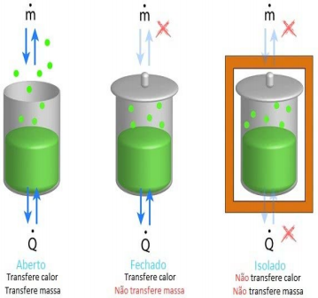
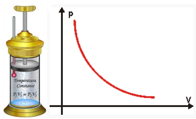
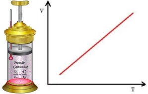
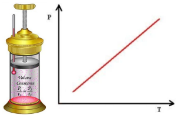

<!DOCTYPE html>
<html>
  <head>
    <meta charset="UTF-8" />
    <meta name="viewport" content="width=device-width, initial-scale=1.0" />
    <link rel="stylesheet" href="../../css/texto.css" />
    <link rel="stylesheet" href="../../css/header.css" />
    <link rel="stylesheet" href="../../css/footer.css" />
    <link rel="preconnect" href="https://fonts.gstatic.com" />
    <link
      href="https://fonts.googleapis.com/css2?family=Cabin:wght@400;500;700&display=swap"
      rel="stylesheet"
    />
  </head>
  <body>
    <header>
      <div class="container">
        <div class="titulo">Maria Clara Sanglard</div>
        <div class="logo">
          
        </div>
      </div>
    </header>
    <div class="texto">
      <h1>GASES</h1>
      <br />
      <br />
      <p>
        O estudo dos gases compreende a análise da matéria quando se apresenta
        no estado gasoso, sendo este o seu estado termodinâmico mais simples.
      </p>
      <br />
      <p>
        Gases são compostos moleculares que possuem características como a
        compressibilidade e a capacidade de expansão. Eles não possuem volume
        fixo, sendo miscíveis em qualquer proporção. As moléculas dessas
        substâncias perdem totalmente a atração entre si e se dispersam umas das
        outras. Além de estarem sempre em movimento desordenado, fazendo com que
        algumas partículas se choquem quando estão confinadas em algum
        recipiente, o que gera a pressão exercida pelo gás sobre determinadas
        superfícies.
      </p>
      <br />
      <p>
        Observação: As relações que valem para um único tipo de gás valem também
        para as misturas gasosas, desde que não haja reação química entre os
        gases da mistura.
      </p>
      <p>P . V = (nA + nB + nC) . R . T</p>
      <br />
      <p>
        Como não é possível observar o comportamento das partículas de um gás
        foi criada a teoria cinética dos gases ou teoria do gás ideal. Um
        aquecimento faz com que as moléculas se movimentem com maior velocidade,
        fazendo com que sua energia cinética média aumente. Essa energia
        presente nas moléculas de um gás é diretamente proporcional à
        temperatura absoluta, como na fórmula:
      </p>
      <p>Ecin = k . T</p>
      <br />
      <p>
        O gás que obedece a este princípio é chamado de gás ideal ou gás
        perfeito, mas como isso não ocorre na maioria das vezes, surgem então os
        gases reais.
      </p>
      <br />
      <p>
        Um gás, seja ele qual for, pode sofrer três tipos de variação de estado,
        são elas:
      </p>
      <p>
        - Volume: um gás sempre ocupa o volume total do recipiente em que está
        confinado, sendo impossível determinar seu volume exato.
      </p>
      <p>
        - Temperatura: se relaciona com o grau de agitação das partículas
        (“Quanto maior a agitação, maior a temperatura do sistema”).
      </p>
      <p>
        - Pressão: pode ser definida como a força que um gás exerce na direção
        perpendicular sobre a área de uma dada superfície.
      </p>
      <br />
      <p>
        Observação: Esse modelo não é totalmente eficaz para um gás real à
        pressões muito altas ou temperaturas muito baixas, uma vez que as
        partículas ficam muito próximas entre si e passam a interferir no
        comportamento umas das outras, sofrendo forças de atração
        intermolecular.
      </p>
      <br />
      <h3>Tipos de sistemas:</h3>
      <ul>
        <li>
          
        </li>
      </ul>
      <br />
      <p>
        Observação: A quantidade de matéria (n) do gás dentro de um recipente
        aberto é inversamente proporcional à temperatura absoluta (T).
      </p>
      <p>ni . Ti = nf . Tf</p>
      <br />
      <h3>Transformações gasosas:</h3>
      <p>
        Processos em que um gás pode ter um ou mais de seus parâmetros (volume,
        pressão e temperatura) alterados. Seus tipos são:
      </p>
      <p>
        - Transformação isotérmica: a temperatura do gás se mantém constante,
        enquanto a pressão e o volume variam, sendo estes inversamente
        proporcionais. Descrita pela Lei de Boyle-Mariotte, o produto entre a
        pressão e o volume de um gás ideal é constante:
      </p>
      <p>P . V = k ou Pi . Vi = Pf . V</p>
      <p>Exemplo: êmbolo de uma seringa.</p>
      <ul>
        <li>
          
        </li>
      </ul>
      <p>
        - Transformação isobárica: a pressão se mantém constante, enquanto o
        volume e a temperatura variam, sendo estes diretamente proporcionais.
        Descrita pela Lei de Charles e Gay-Lussac, a razão entre o volume e a
        pressão de um gás é igual a uma constante:
      </p>
      <p>V / T = k ou Vi / Ti = Vf / Tf</p>
      <p>Exemplo: bexiga de ar.</p>
      <ul>
        <li>
          
        </li>
      </ul>
      <p>
        - Transformação isovolumétrica, isométrica ou isocórica: o volume se
        mantém constante, enquanto a pressão e a temperatura variam, sendo estas
        diretamente proporcionais. Descrita pela Lei de Charles, a razão entre a
        pressão e a temperatura de um gás ideal é sempre constante. Além disso,
        esse tipo de transformação ocorre dentro de recipientes de paredes
        rígidas.
      </p>
      <p>P / T = k ou Pi / Ti = Pf / Tf</p>
      <p>Exemplo: panela de pressão.</p>
      <ul>
        <li>
          
        </li>
      </ul>
      <p>
        - Transformação adiabática: processo sofrido por um gás que não troca
        calor com o meio externo nem com as paredes do seu recipiente. O produto
        entre a pressão e o volume elevado a uma constante γ (depende dos graus
        de liberdade do gás) é constante. Pode ser calculada pela razão entre o
        calor específico em pressão constante e calor específico em volume
        constante.
      </p>
      <p>Pi . Viγ = Pf . Vfγ</p>
      <p>Exemplo: spray de aerossol.</p>
      <br />
      <h3>Equação geral dos gases:</h3>
      <p>(Pi . Vi ) / Ti = (Pf . Vf) / Tf</p>
      <br />
      <h3>Equação de Clapeyron:</h3>
      <p>P . V = n . R . T ou P . V = (m / M) . R . T</p>
      <br />
      <h3>Fração molar:</h3>
      <p>nA / ntotal + nA / ntotal + nA / ntotal = ntotal / ntotal = 1</p>
      <br />
      <h3>Pressão parcial:</h3>
      <p>Ptotal = PA + PB + PC ou PA = Ptotal . XA</p>
      <br />
      <h3>Volume parcial:</h3>
      <p>Vtotal = VA + VB + VC ou VA = Vtotal . XA</p>
      <br />
      <h3>Massa molar aparente:</h3>
      <p>
        Maparente = mtotal / ntotal ou Maparente = MA . XA + MB . XB + MC . XC
      </p>
      <br />
      <h3>Densidade aparente:</h3>
      <p>daparente = (P . Maparente) / (R . T)</p>
      <br />
      <h3>Umidade absoltuta:</h3>
      <p>
        Quantidade de vapor de água presente em determinado volume de ar, a dada
        temperatura.
      </p>
      <h3>Umidade relativa:</h3>
      <p>
        Quociente entre a quantidade de vapor de água existente no ar e a
        quantidade de vapor de água necessária para saturar o mesmo volume de
        ar, a dada temperatura.
      </p>
      <p>
        Urelativa = Pvapor da água no local a X°C / Pmáxima de vapor da água a
        X°C
      </p>
      <br />
      <h3>Difusão:</h3>
      <p>
        Movimento espontâneo das partículas de um gás ao se espalharem
        uniformemente em meio à partículas de outros gases.
      </p>
      <h3>Efusão</h3>
      <p>
        Movimento espontâneo das partículas de um gás ao se espalharem no
        ambiente após escaparem de um sistema fechado.
      </p>
      <p>
        Observação: Quanto menor a massa molar de um gás, maior sua velocidade
        de difusão e efusão.
      </p>
      <div class="box">
        <h2>Ozônio</h2>
        <p>
          O ozônio ou ozono, também conhecido como trioxigênio, segundo a
          nomenclatura da IUPAC, é uma substância química natural e um alótropo
          triatômico do oxigênio muito menos estável que o diatômico. Por isso
          ele é altamente reativo, buscando estabilidade. Essa molécula se forma
          quando partículas de oxigênio se rompem devido à radiação ultravioleta
          e se combinam individualmente com outras partículas, também, de
          oxigênio.
        </p>
        <p>
          A camada de ozônio, região da atmosfera com aproximadamente 30km de
          altura, é encontrada na estratosfera e tem a propriedade de absorver a
          radiação ultravioleta. Sem essa proteção oferecida pelo ciclo
          ozônio-oxigênio, as radiações causariam graves danos aos organismos
          vivos que habitam a superfície do planeta Terra. Segundo a Agência
          Nacional de Vigilância Sanitária, essa camada tem "ação desinfetante
          na água de consumo humano e é utilizada com esta finalidade,
          principalmente na Europa". Em determinadas regiões, a concentração de
          ozônio se intensifica e, em outras, o ozônio fica rarefeito, surgindo
          os chamados “buracos da camada de ozônio”, problema previsto para o
          século XXI.
        </p>
        <p>
          Os CFCs (cloro-fluor-carbonetos), conhecidos pelo efeito prejudicial à
          camada de ozônio, por meio do cloro gasoso, têm o papel de paralisar o
          ciclo ozônio-oxigênio. O problema dessa camada tem sido reduzido
          através da coscientização. Felizmente, a emissão desses gases foi
          reduzida e a camada de ozônio recupera o seu tamanho gradativamente.
        </p>
        <p>- Aparência: gás colorido de tom azul</p>
        <p>- Densidade: 2,144 g/L (0 °C)</p>
        <p>- Entalpia padrão de formação: +142,3 kJ·mol−1</p>
        <p>- Entropia molar padrão: 237,7 J·K−1.mol−1</p>
        <p>- Índice de refracção: 1,2226</p>
        <p>- Massa molar: 47,998 g·mol−1</p>
        <p>- Ponto de ebulição: −111,9 °C</p>
        <p>- Ponto de fusão: −192,5 °C</p>
        <p>- Solubilidade em água: 0,105 g/100mL (0 °C)</p>
      </div>
    </div>
    <footer>
      <div class="container">
        <div class="logo-cefet">
          
        </div>
        <div class="ano">2020</div>
      </div>
    </footer>
  </body>
</html>
